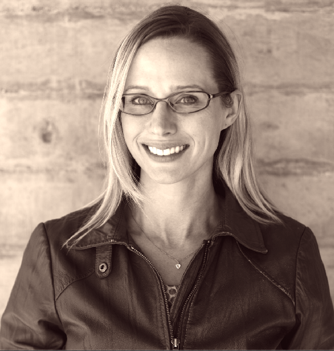

About
Photo credit: Tara-Lynne Pixley
I am a PhD Candidate at University of California, San Diego in the Department of Communication and Science Studies Program. From 2014-16, I am a Visiting Graduate Researcher in the Department of Communication at University of Washington in Seattle.
To augment my research, I am currently enrolled in a year-long classroom certificate program in front-end web development (HTML5, CSS3, & Responsive Design for Web Development) at University of Washington, Professional & Continuing Education.
I am a member of Catalyst Lab. From 2013-15 I served as the Co-Managing Editor with Cristina Visperas and Web Developer of Catalyst: Feminism, Theory, Technoscience, an open-source academic journal.
I earned a Master’s degree in Gender Studies at Central European University as a Rotary Ambassadorial Scholar and earned my BA at University of Washington in the Comparative History of Ideas program.
My training in feminist theory, cultural studies, media studies, and science and technology studies informs my current research.
Another version of my biography is on the UC San Diego’s webpage. Occasionally, I look at/use Twitter, under the handle @monikajones.
Research
I study the way that cultural, historical, gendered, and socio-technical forces shape the meaning of, and people’s participation in, networks and organizations.
My interdisciplinary research is informed by feminist science and technology studies, infrastructure studies, sociology of work, visual culture studies, and cultural studies. My work is also informed by my experience in teaching myself web design and development, experience now augmented by my enrollment in a certificate program specifically on front-end (client-side) web development.
I regularly give presentations, talks, and lectures in higher education classrooms, conferences, and workshops in my research areas.
Contact me if you are interested in inviting me to speak or work with you as a consultant.
Research projects
My dissertation project is an ethnographically-informed multi-sited research project on the social and technical achievement of the meaning of “freelance writer,” by focusing on the online English-language work platforms that currently broker freelance writing work. As a part of the project, I’m interviewing freelancers (editors, writers) as well as companies who source their work who use or have used online distributed work platforms (such as Elance/oDesk/Upwork, Outsource.com, and Demand Media Studios). What has your experience been like? I am interested in learning more about how you work, where you work, and how you’ve used online tools in a (~30-60minute) phone, internet and/or in-person interview. If this sounds like you, or someone you know, please reach out to me by email at msengul@ucsd.edu or schedule an appointment! *This project is has approval from the Institutional Review Board (IRB) at UC San Didego.*
I engage with the Wikipedia project as a volunteer, researcher, and project manager to understand how the distributed infrastructure of the non-profit organization shapes participation and content. Currently, I am bringing praxis together with theory to develop a protocol for addressing systemic bias through a distributed, feminist “gap finding” project, which I chronicle in a blog. The project is in collaboration with the WikiEd Foundation and funded by a grant from the Wikimedia Foundation. The impulse for the project came out of a critical edit-a-thon I co-organized, ‘I Love To You’: Critical Wikipedia Edit-a-thon, with Amanda Menking, in February 2015. As a volunteer editor, I am also affiliated with the Cascadia Wikimedians User Group, in Seattle.
I have conducted archival research with Grace Murray Hopper’s personal and professional effects. I’m currently doing a close reading of her papers, diagrams and flowcharts, thinking about how notions of linage and temporality animate her conception of distributed human action. This research trip was in part funded by a grant received by my adviser, Lisa Cartwright, for Catalyst Journal: Feminism, Theory, Technoscience, where I am spearheading the web design/management.
For my master’s degree, I researched the ways women identified with, and managed, their professional in the unique post-socialist space of Hungary. I conducted interviews and focus groups with women professionals (scientists and project managers) at three transnational corporations in Hungary. I analyzed the ways that these women identified with, resisted, and subverted corporate culture and femininity, shedding light on the cultural and gendered features of women’s participation in the labor market in Hungary and the cultural and socio-economic factors that shape association with a profession.
Publications
Sengul-Jones, M. (Forthcoming 2016). "The aesthetics of online freelance labour platforms." In Ana Sofia Elias, Rosalind Gill and Christina Scharff (Eds.) Aesthetic Labour: Rethinking beauty politics in neoliberalism. London, UK: Palgrave Macmillan.
Irani, L., and Sengul-Jones, M. (2015). "Difference Work: A Conversation with Lilly Irani." Catalyst: Feminism, Theory, Technoscience,> 1(1). Retrieved from http://catalystjournal.org/ojs/index.php/catalyst/article/view/irani_senjones/144